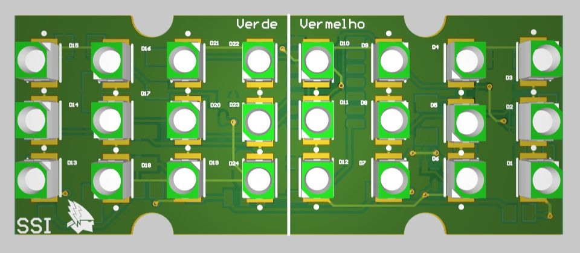

TX · 24 V Rev2 · EESC-USP Tupã
SSI indicator
A red and green LED indicator board with BMS and IMD inputs.

Board details
- Supply
- 24 V input
- Regulation
- L78L05ABUTR 5 V regulator
- Indication
- Red and green LED groups
- Signals
- BMS_PAINEL and IMD_PAINEL
SSI schematics
1 sheetLEDs, drivers and connectionsView sheet

Altium project
These source links may require workspace access. The schematic drawings above are saved with this portfolio.